GNSS Based Orbit Determination and Trajectory Prediction
Feature guide
This application determines the orbit of a low-Earth-orbit satellite from its own GPS measurements and predicts where it will be over the next days. It runs as a local web application on one computer, with no internet connection. This guide walks through every feature: what it does, why it is needed, and how to use it.
Test satellite Sentinel-3ATested window 3 Sep – 2 Nov 2024, 61 daily cutoffsCutoff 05:59:42 UTC = 06:00:00 GPSOutput CCSDS OEM 2.0Runs offline, Java 17+
Ten-minute demo walkthrough
A presentation order for showing the project. Step through with the buttons or the arrow keys; click a screenshot to enlarge it.
Start the app
One command starts a small web server on this computer only and opens the browser. On first start the project's data folders are catalogued automatically.
java -jar target\leo-trajectory-0.1.0.jar gui
Say: “Everything runs locally. No data leaves the machine, which is what an air-gapped mission facility needs.”
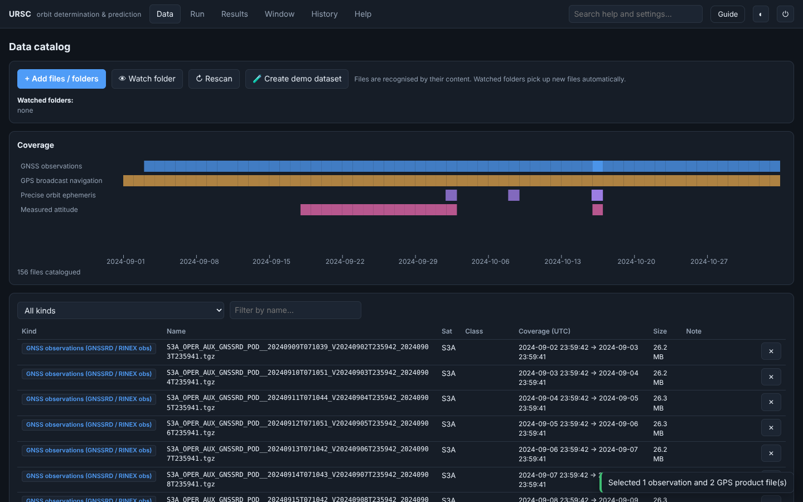
The data catalog
Every input file is recognised by its content: GNSSRD measurements, GPS broadcast navigation, IGS precise orbits and clocks, POEORB reference orbits, PROQUA attitude, Earth orientation and space weather. Coverage and a SHA-256 checksum are recorded for each.
Say: “The program decides which files belong to which forecast. Watched folders pick up new files as they arrive.”
Run setup with tested defaults
The Run tab opens with the settings of the tested window: Sentinel-3A, cutoff 2024-09-03 05:59:42 UTC, six-hour measurement arc, seven-day forecast, 1,130 kg, 8 m² drag and radiation areas. The inputs for that cutoff are already selected from the catalog.
Say: “Only three things are mandatory: the measurements, a GPS orbit product and the cutoff time. Everything else has a documented default.”
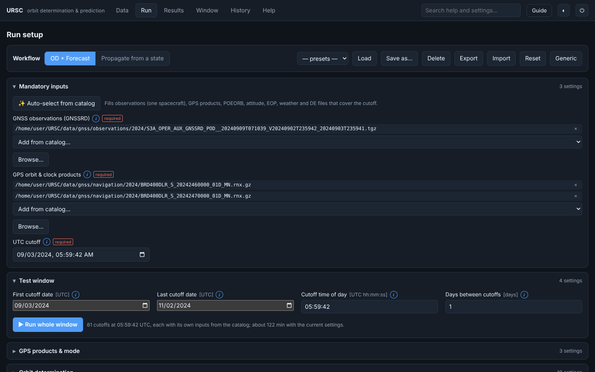
Explain any setting with ⓘ
Each of the 85 settings has an ⓘ button: what the setting is, how to choose it, and its default. Changed values are marked and can be reset one by one.
Say: “A new operator can learn the trade-offs without leaving the screen.”
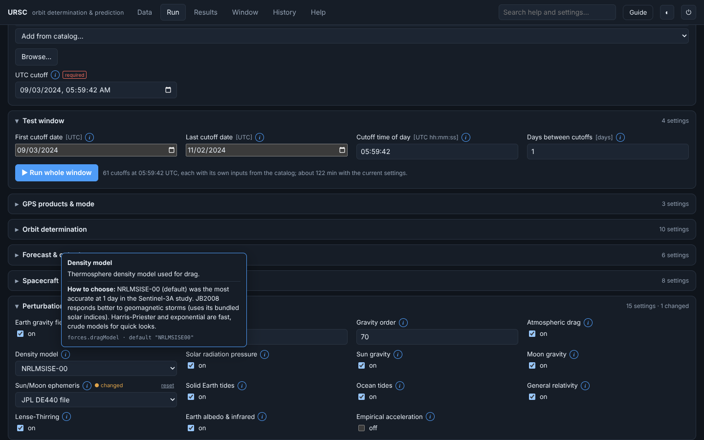
Perturbation switches
Every force can be switched on or off, and each has its own model choice: gravity field degree and order, atmospheric density model, solar radiation pressure, Sun and Moon, tides, relativity, Earth radiation and empirical accelerations.
Say: “This makes the tool a research instrument: you can see what each force contributes.”
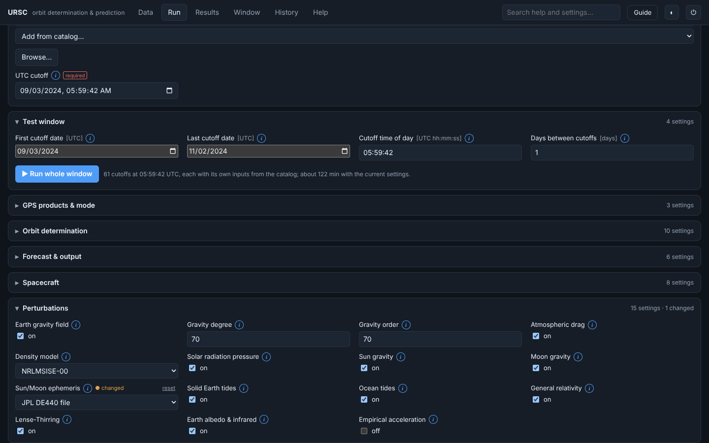
One forecast on the globe
Press Run. The summary shows how many GPS fixes were used, the orbit-fit quality and any warnings. The 3D globe and the 2D map show the predicted ground track; the slider and play button animate it.
Say: “Seventy-two position fixes over six hours, fitted to about two metres, then propagated seven days ahead.”
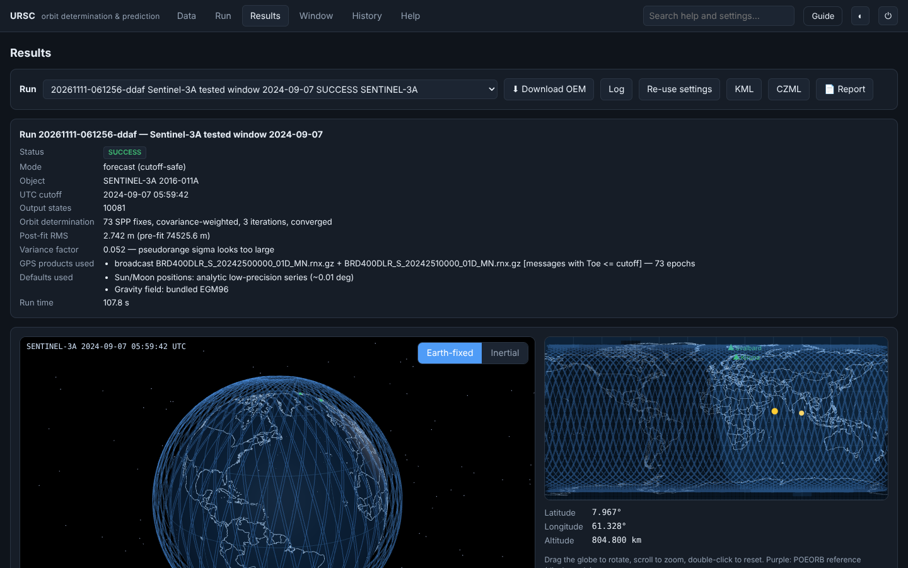
Ride along with Sentinel-3A
Follow satellite puts the camera next to the spacecraft. Sentinel-3A is drawn as its own build (main body, single solar wing, altimeter dish, camera fan); other satellites get a generic model.
Say: “The model flies nadir-pointing along the predicted velocity, exactly as the propagated states say.”
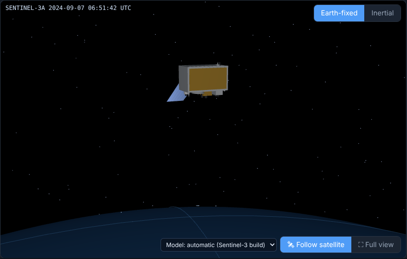
The two-month window
Run whole window repeats the forecast for every day from 3 September to 2 November 2024, each with its own inputs. The Window tab lists every day with its status, fit quality, warnings and, where a reference orbit exists, the forecast error.
Say: “This is the test campaign of the project, reproduced from the interface.”
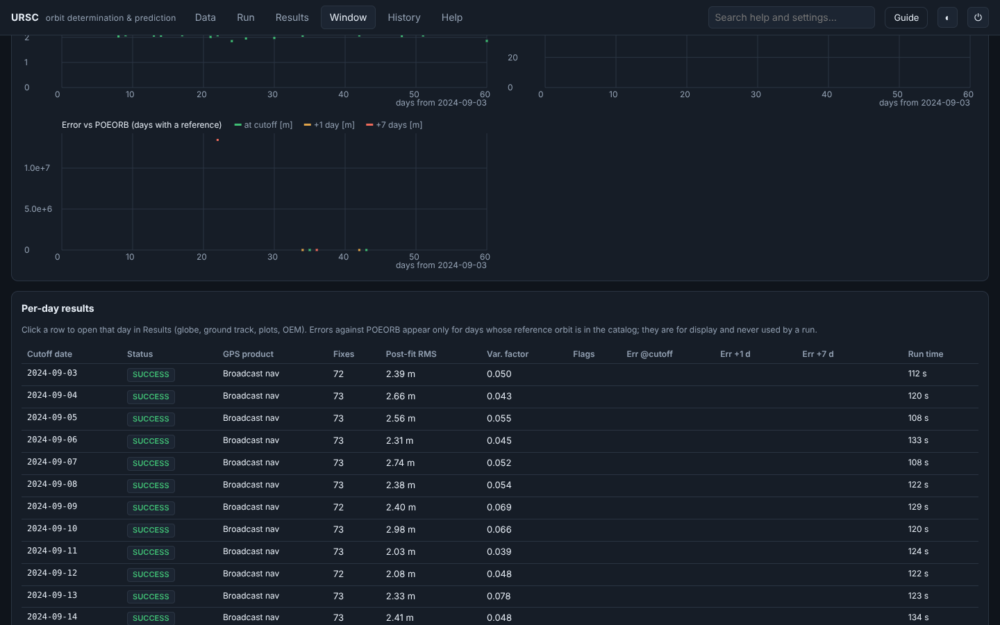
Compare modelling choices
Sweep repeats one case while varying a single setting; Compare plots each run's difference from a base run in radial, along-track and cross-track components.
Say: “Changing only the density model moves the seven-day prediction by a few hundred metres, almost entirely along-track.”
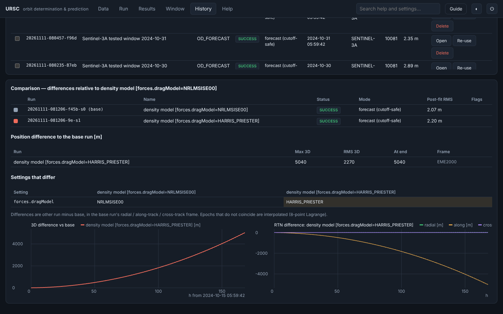
Outputs and help
Each run writes a CCSDS OEM file and offers KML, CZML, a printable report and its log. Help search answers questions from the bundled documentation, offline, with the source of every passage.
Say: “The OEM file is the deliverable; the rest helps people check it.”
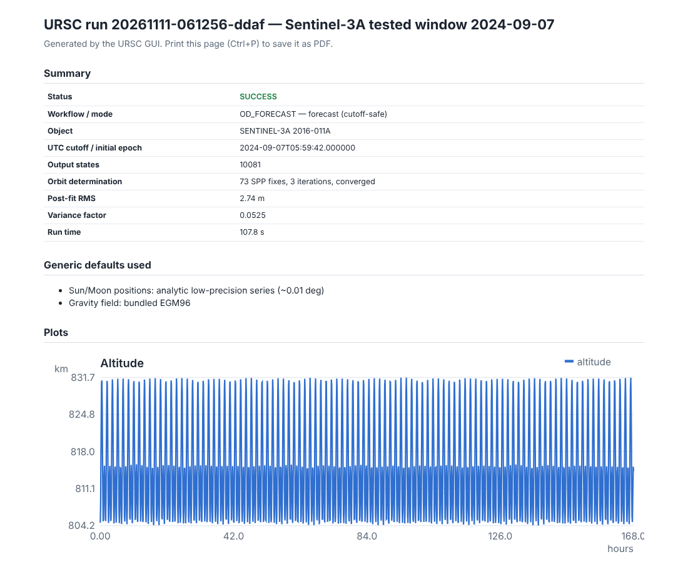
Step 1 of 10
Startup defaults: the tested window
These values are loaded when the app starts. Every one can be changed in the Run tab. Reset returns to them; Generic loads the plain library defaults (a 1,000 kg cannonball and no window).
Setting
Default
Why this value
UTC cutoff
2024-09-03 05:59:42
First day of the tested window; equals 06:00:00 GPS time
Window
2024-09-03 → 2024-11-02, every 1 day
The 61 cutoffs of the test campaign
Measurement arc / sampling
6 h / 300 s
73 position fixes per cutoff, as tested
Pseudorange sigma / max iterations
5 m / 12
Weights the fixes; bounds the orbit fit
Forecast span / output step
7 days / 60 s
Scored at +1 and +7 days in the test
Spacecraft
SENTINEL-3A, 1,130 kg, 8 m², Cd 2.2, Cr 1.3
Frozen baseline of the test
Gravity / density model
EGM96 70×70 / NRLMSISE-00
Most accurate combination at one day in the study
Integrator
Dormand–Prince 5(4), 1e-10 abs, 1e-13 rel, ≤ 30 s
As tested
After the cutoff
weather and EOP persisted, Ap = 5
Cutoff-safe: nothing from the future is used
GPS products
Final → Rapid → Ultra-rapid → broadcast, Forecast mode
Best product actually available at the cutoff
Covariance propagation
off
Not part of the tested protocol; switch on for uncertainty plots
Result of the full tested window
The whole window was run with the defaults above: one orbit determination and 7-day forecast for each of the 61 cutoffs, with each day's inputs picked from the catalog. Only broadcast GPS navigation was used, because no IGS orbit or clock products are stored in the repository.
Measure
Value
Meaning
Forecasts issued
61 of 61
Every cutoff converged, none flagged as a possible manoeuvre
Orbit-fit post-fit RMS
median 2.35 m (1.85 – 4.38 m)
How closely the fitted orbit matches the GPS position fixes
Position fixes per cutoff
73
6-hour arc sampled every 300 s
Run time per cutoff
median 125 s
About 2 hours for the whole window on one computer
Error against POEORB at the cutoff
2.17 m (8 Oct), 0.48 m (16 Oct)
Only days whose Sentinel-3A reference orbit is in the repository
Error against POEORB after 1 day
268 m (7 Oct), 28.7 m (15 Oct)
Forecast quality one day ahead, for the same reference days
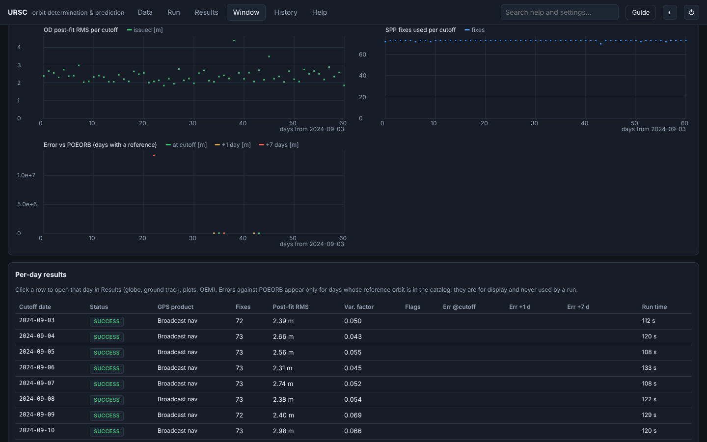
Help answers: retrieval-augmented generation (RAG), offline
The Help tab answers questions in plain language. Instead of guessing, it retrieves the most relevant passages from the program's own documentation and then writes an answer from them, citing each source. Nothing leaves the computer, so it is safe on an air-gapped network — and a chatbot that only answers from verified documentation, and shows its sources, is what a mission setting needs.
Your question
→
Retrieve · BM25bundled docs · every setting · your notes
→
Top passages
→
Generate the answeroffline · Ollama · cloud
→
Cited answer
How it works, step by step
Index (once, at start). The bundled help pages, every setting's explanation from the parameter registry, the project documentation and any Markdown or text notes you drop in <workspace>/knowledge are split at their headings into ~1,200-character passages and indexed with Okapi BM25 — a classic ranking that scores passages by how well their words match a query. Fully offline.
Retrieve. Your question is matched against that index; the best passages are ranked, with words in a passage's title weighted double and very common words ignored.
Augment & generate. Those retrieved passages — and only those — are handed to the first available answer provider, which writes the answer.
Cite. Every answer lists the passages it used and their source, so you can check it against the documentation.
Answer providers (tried in order)
Offline extractivedefault · always on
No model, no network: it selects the sentences from the top passages that best cover your question and cites each one. This is what runs out of the box.
Local model (Ollama)optional · offline
A local LLM can phrase the answer from the same retrieved passages — still on the computer, no internet. Wired into the interface and configuration; disabled in this release.
Cloud model (API key)optional · online
Claude or any OpenAI-compatible endpoint, for networks that do allow internet. Off by default, never used on an air-gapped network; the key is read from an environment variable and never written to disk.
Grow its knowledge without code: drop your own Markdown notes into the workspace knowledge folder and press re-index. The retrieval step always stays offline, whichever provider writes the answer.
All features
Grouped by where they live in the interface. Type to filter.
Start and offline use
Local web application
start-upcommand line
What
A web server on 127.0.0.1 serves the interface to the browser of the same computer. The address carries a per-start token.
Why
A browser interface needs no installation, and the loopback address plus the token keep other computers and other web pages out.
The 3D globe library, country borders, help documents, gravity field and search index are all inside the program. Tested: a full run with no network made zero requests outside the computer.
Why
Mission facilities often forbid internet access. New data arrives on approved media instead.
How
Nothing to do. Copy new data into a watched folder.
Self-contained bundles
packaging
What
Build scripts produce a native application and a portable folder, each with its own minimal Java runtime (about 23 MB), plus checksums.
Why
The target computer needs no Java installation and no administrator rights.
How
packaging/build-bundle.ps1 on Windows, packaging/build-bundle.sh on Linux or macOS; instructions in packaging/README-OFFLINE.md.
Data
Data catalog
Data tab
What
Add single files, several files, folders or several folders. Each file is classified by its content, with its time coverage, satellite, product class and SHA-256 checksum.
Why
Forecasts depend on picking the right files for the cutoff. The checksum records exactly which inputs produced a result.
How
Data → Add files or Add folder. Compressed .gz, .Z and .tgz archives are read directly.
Watched folders
Data tab
What
A watched folder is indexed whenever new files land in it, and a notification appears. A run is never started automatically.
Why
Measurements and products keep arriving daily; operators decide when to run.
How
Data → Watch folder.
Project data on first start
start-up
What
When the workspace is empty and the program runs from the project folder, the repository's data folder and the tested Earth orientation and space-weather files are catalogued in the background (about 45 s for 1.8 GB).
Why
The tested window is ready to run the moment the interface opens.
How
Automatic. Use --data to name other folders, or --no-project-data to skip.
Demo dataset
Data tab
What
Writes a simulated satellite, GNSS measurements, IGS products and a reference orbit for 15 January 2025.
Why
Lets anyone try the full workflow without real mission data.
How
Data → Create demo dataset, then cutoff 2025-01-15 06:00:00 and Auto-select.
Run setup
Three mandatory inputs
Run tabMandatory inputs
What
GNSSRD measurements, one GPS orbit and clock product, and the UTC cutoff. Every other setting has a default, and the run lists each default it used.
Why
A forecast can always be made from the minimum, and nothing is assumed silently.
How
Auto-select from catalog fills the inputs for the cutoff, for one spacecraft at a time.
Two workflows
Run tab
What
OD + Forecast determines the orbit with an Orekit batch least-squares fit to the GPS code and carrier phase (single-point positions only start the fit) and predicts it with the Orekit propagator. Propagate from a state starts from a typed position and velocity, an OEM file or a POEORB epoch.
Why
Operations need the full chain; analysis often starts from a known state.
How
Workflow switch at the top of the Run tab.
GPS product priority and forecast honesty
Run tabGPS products & mode
What
IGS Final, then Rapid, then Ultra-rapid, then broadcast navigation. In Forecast mode a product counts only if it was published before the cutoff; Reconstruction mode uses the best product present and is labelled retrospective. A tier can be forced for comparisons.
Why
A forecast that secretly used data published later would look better than it can be in operations.
How
Product mode, eligibility rule and forced tier settings. The results list which product served each epoch and why others were excluded.
Every setting explained
Run tab
What
85 settings in groups, each with an ⓘ note (what it is, how to choose it, default), a changed marker and its own reset. Settings are validated as you type.
Why
Makes the trade-offs visible and prevents runs with impossible settings.
How
Click ⓘ beside any label.
Perturbations and their models
Run tabPerturbations
What
Earth gravity (degree and order up to 70), drag with NRLMSISE-00, JB2008, Harris–Priester or exponential density, solar radiation pressure with eclipses, Sun and Moon (analytic or DE440), solid and ocean tides, relativity including Lense–Thirring, Earth albedo and infrared, and constant empirical accelerations.
Why
Each force can be studied on its own, and models can be compared.
How
Switch each one on or off and choose its model.
Spacecraft, environment and integrator
Run tab
What
Cannonball or box-wing shape (with PROQUA measured attitude), mass, areas, Cd and Cr (optionally estimated); space weather and Earth orientation, persisted after the cutoff in forecasts; integrator tolerances and step limits.
Why
These dominate forecast error for a low orbit: drag area and density in particular.
How
Spacecraft, Optional data & environment, and Integrator groups.
Presets, Reset and Generic
Run tab
What
Save the whole form as a named preset, load, export or import it. Reset returns to the tested-window defaults; Generic loads the plain library defaults.
Why
Repeatable studies, and an easy way back to known settings.
How
Buttons at the top of the Run tab.
Windows and experiments
Window run
Run tabWindow tab
What
One OD + forecast per day over a date range, each day with its own cutoff and its own inputs from the catalog. The Window tab shows summary tiles, trends across the window and a per-day table; rows open in Results.
Why
One forecast proves little. A campaign over many days shows how reliable the method is.
How
Run → Test window → Run whole window. Days without data are listed as no data and skipped.
Sweep
Run tab
What
Repeats the current case while varying one setting over up to 12 values, then opens the comparison.
Why
Answers questions such as “how much does the density model matter?” directly.
How
Run → Sweep…, choose the setting and its values.
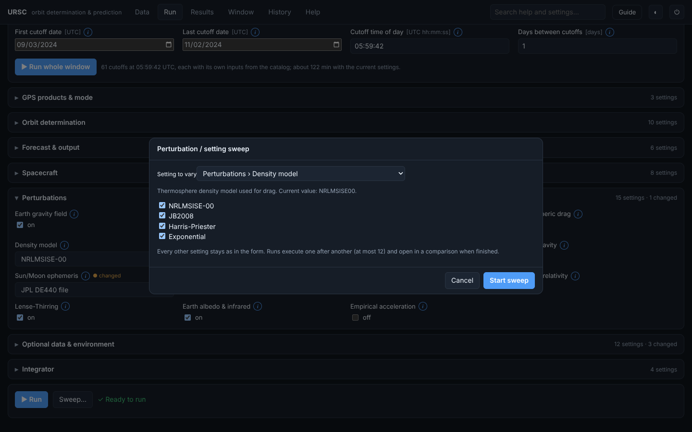
Compare runs
History tab
What
Lists the settings that differ and plots each run's position difference from the first, split into radial, along-track and cross-track.
Why
Shows where a modelling change acts: drag shows up along-track.
How
Tick two or more runs in History and press Compare.
Results and visualisation
Run summary and provenance
Results tab
What
Status, number of fixes, fit quality (post-fit RMS, variance factor), GPS products used and rejected, defaults used, warnings and run time.
Why
A forecast is only useful if its basis can be checked.
How
Opens after each run, or pick any run from the list.
Manoeuvre and quality flags
Results tabWindow tab
What
Warns when the orbit-fit residuals are much larger than the measurement noise, grow towards one end of the arc, or jump abruptly.
Why
A thruster burn or bad data inside the arc spoils the forecast; the operator must know.
How
Shown at the top of the summary, in the OEM header and in the report.
3D globe, time slider and playback
Results tab
What
Earth-fixed or inertial view with country borders, sunlight, the predicted orbit and the satellite. The slider and play button (60× to 3,600×) animate the forecast.
Why
Makes a list of numbers into something anyone can follow.
How
Drag to rotate, scroll to zoom, double-click to reset.
Spacecraft models and follow camera
Results tab
What
Sentinel-3A and 3B are drawn as a Sentinel-3 build; any other satellite as a generic one. The model points at nadir and flies along the predicted velocity. Follow satellite rides with it; the model is enlarged to be visible.
Why
Shows attitude and motion as well as position.
How
Model selector and Follow satellite at the bottom right of the globe.
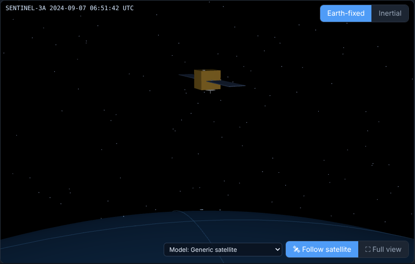
2D ground track
Results tab
What
Map of the ground track with night shading and the sub-solar point, plus latitude, longitude and altitude at the current time.
Why
The quickest way to see where the satellite is over the Earth.
How
Beside the globe; follows the time slider.
Diagnostics plots
Results tab
What
Altitude, satellites in view and PDOP, GPS fix residuals (accepted and rejected), orbit-fit residuals, formal uncertainty and the per-epoch fix table.
Why
Shows why a run is good or bad.
How
Plots section of Results; hover for values.
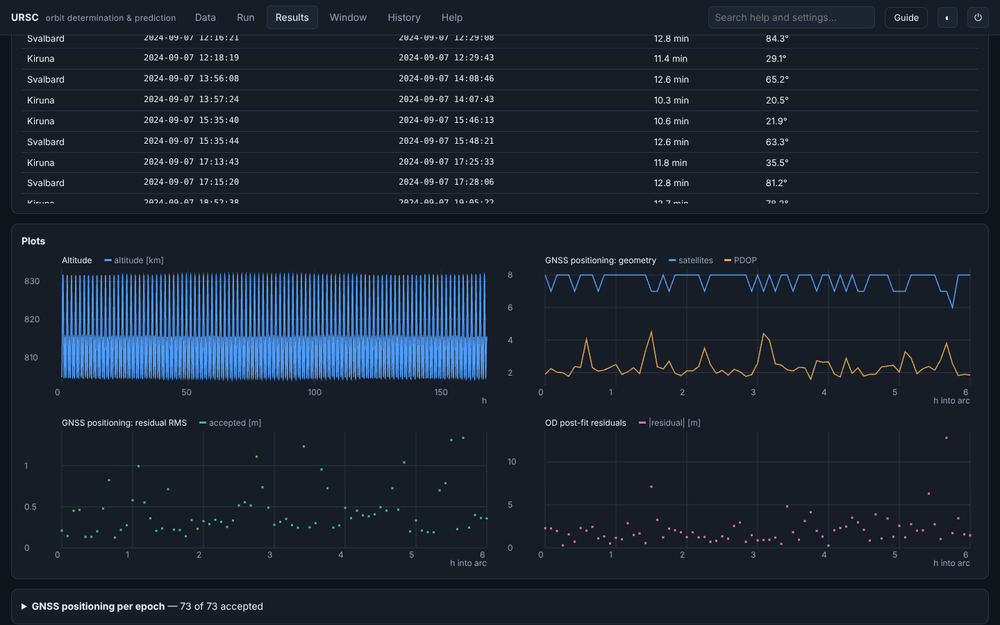
Reference orbit overlay and error
Results tab
What
When a POEORB precise orbit covers the forecast, it is drawn in purple and the error is plotted as 3D, radial, along-track and cross-track.
Why
Measures forecast accuracy. The reference is display-only and never feeds a run.
How
Add POEORB files to the catalog; Auto-select picks them.
Uncertainty: covariance plot and ellipsoid
Results tab
What
With covariance on, the fit's formal uncertainty is propagated and shown as radial, along-track and cross-track 1σ and as an enlarged ellipsoid on the globe.
Why
A position without its uncertainty cannot be used for decisions.
How
Forecast & output → Covariance on; tick 1σ ellipsoid under the globe.
Ground-station passes
Results tab
What
Stations with latitude, longitude, height and elevation mask. Lists each pass's start, end, duration and maximum elevation; click to jump to it.
Why
Contact planning is what a predicted orbit is used for.
How
Results → Ground-station passes → Add station.
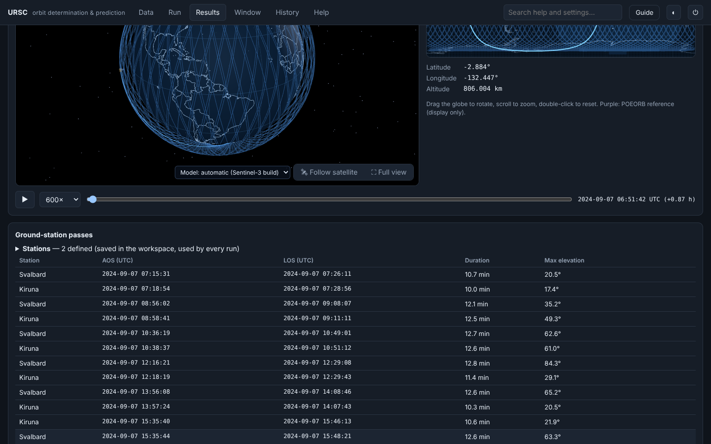
Outputs
CCSDS OEM file
Results tab
What
Every trajectory is written as CCSDS Orbit Ephemeris Message 2.0 (text form) in EME2000, GCRF or ITRF, with covariance blocks when available and the full provenance in comments. Validated with an independent Orekit reader.
Why
The international standard format other flight-dynamics tools read.
How
Download OEM.
Report, KML, CZML and log
Results tab
What
A printable report with summary, flags, plots, passes, inputs and all settings (changed ones highlighted); KML for Google Earth; CZML for Cesium; the full run log.
Why
For review, archiving and sharing with people who do not run the app.
How
Buttons beside Download OEM; print the report to PDF.
History and help
Run history
History tab
What
Every run is kept with its settings, input checksums, outputs and log. Open, re-use settings or delete.
Why
Any result can be reproduced and audited later.
How
History tab.
Help search (retrieval-augmented, RAG)
Help tabsearch box
What
Retrieves the most relevant passages from the bundled documentation, every setting's explanation and your own notes with offline BM25 ranking, then writes a plain-language answer from them and cites each source. A local Ollama model or an API-key model can phrase the answer through the same interface. See how RAG works above.
Why
Answers questions without internet access or a second person, and only from verified documentation — so it cannot invent facts, and every claim shows its source.
How
Type a question in the search box at the top right. Add Markdown notes to the workspace knowledge folder to extend it.